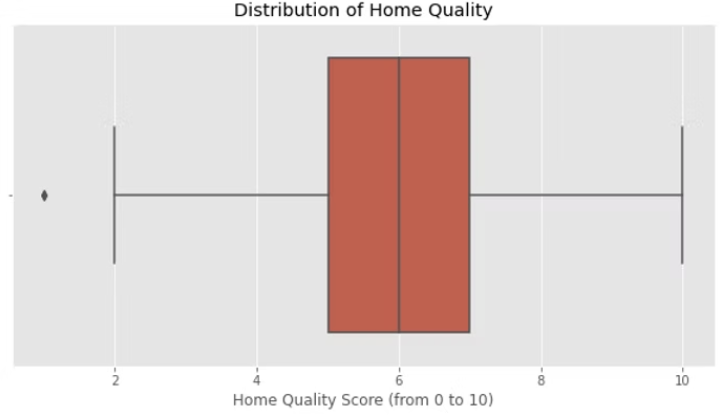

Introduction
As is common knowledge, hiring a valuation specialist is the standard procedure for determining house prices. However, there must be some quicker answers because of the world's population growth and housing shortages. The purpose of this project is to create a predictive mathematical model and use it to calculate the costs of new homes. We have information on recent home sales from Ames City. I used linear regression to build models after researching the situation. This competition asks you to estimate the final price of each residential property in Ames, Iowa, given the 79 explanatory factors that describe (nearly) every feature of residential properties there.
Introduction of Problem & Data
A variety of data sets are presented on the website Kaggle, which hosts data science competitions. Users can compete to build the model that performs the best across the most data sets. Here, we're utilizing housing data from Ames, Iowa, from 2000 to 2010. The testing data comes from purchases made in 2010, whereas the training data comes from sales made before 2010. The Ames collection is one of the more challenging ones among those that will work "out of the box" in Kaggle, which houses data sets with varied degrees of complexity and data cleanliness. It has a wide range of characteristics, some of which contain N/A values, some of which are categorical, and even some of which have features where a N/A value reflects something important rather than merely missing data. Our goal with this data set is to employ a number of variables and a variety of multiple linear regression models to forecast the sale price of a house in US dollars. Each model has specifics that we'll go over in more depth below, but they all employ statistical techniques to forecast a dependent variable using one or more independent factors.
What is regression and how does it work?
Regression is an analysis technique that helps make relationships between variables by estimating how one variable affects the other. Regression uses a mathematical method to predict a continuous outcome (y) using a predictor variable (x). There are many kinds of regression analysis such as linear regression, logistic regression, ridges regression, lasso regression and many more. For this project we will focus on linear regression but also experiment with the other models. Linear regression is a regression technique that is used to find linear relationships between variables, target and predictor variables. There are 2 types of linear regression; simple, multiple, and multivariate linear regression. For this project we will use simple linear regression which is used to find relationships between two continuous variables.
Experiment 1:
We chose to use an intuitive approach to the model for our initial run and then see how we could iterate and improve on it in subsequent attempts. The price of a house should be impacted by all qualities. For instance, it makes sense to assume that a relationship between a home's price and square footage exists. We'll only employ three features at most. We should make things straightforward so that we can concentrate on analyzing and comprehending the material. Each feature should be of a high caliber. We must stay away from collinear characteristics. It seems obvious that square footage and number of rooms in a home will be related to some extent and probably have an impact on value so it would do us well to steer clear of potential overfitting.
Data Understanding
Our training data set had 1,460 observations and 81 features in total. With that many features, it would be pointless to go through each one in detail, so we'll just focus on giving you helpful details when they apply. The complete list of variables is accessible if you're interested. We chose to identify our features, investigate the data, and then pre-process them with the awareness that we may have to reiterate through the cycle as we tackled it in a slightly unconventional way because working with over 118,000 data points can get a little computationally heavy.
INDEPENDENT VALUES
Distribution of garage sizes

The capacity of a given home's garage is indicated by a discrete variable that is quite simple to understand. A 0 indicates that there is no garage present, and it is devoid of any Nan values
Above grade living area
A constant that represents the amount of floor space a home has above grade. Above-grade refers to structures with levels above the first floor but excluding basements. There are no Nan values to take into mind because every home in the data set had measurements, and every property must have at least some indoor square footage.
Distribution of home quality
A discrete score from one through ten indicating the home's overall material and finish quality.
Sale prices
The price for which a given home is sold in US dollars.
Data Pre-processing:
It's a little bit different and results in much cleaner data to start with to use data from a Kaggle competition versus having to go out and find (or gather) it in the wild. As a result, our data pre-processing will be a little less involved than in earlier steps, but we still need to double-check everything to confirm that we're right about how clean the data is. In order to make changes as needed without affecting the original training data, we started pulling all of our features into a new data frame. We also verified that all observations in each feature were using the same data type. Next, we looked for NA values that would suggest a missing observation, but we discovered that the original data contained all of the observations for our features. We started searching for duplicate values in the set as soon as we were certain that all the data was there. Our initial check led us to believe that there were some potential duplicates but we found that the function we'd used was checking for specific features to have matches, not for an entire observation to match another one.
If you go back and look at the selling price distribution graphic, you'll see that it is left-skewed and includes a fair amount of outliers. The hardest aspect of pre-processing, it seemed, would be cleaning up our target variable. We would run the risk of our model being skewed by outliers and performing badly with test data if we used the sale price data as-is. After doing some investigation, we decided to take the natural logarithm of each value in our sale price data (to base e). Fortunately, numpy has a very simple function for this operation, and the final Even while it isn't perfect, the number of outliers is substantially lower and they are dispersed more evenly between the high and low end. Although it would be worthwhile to test a range of various methods to standardize the data if we were to use a model like this in production, for the sake of this discussion, this appears adequate. It's important to note that any predictions provided by a model trained on natural logarithmic training data would need to be transformed using numpy exp function.
Modeling:
It was time to begin modeling with our data once we had it ready and understood it. We established a linear regression model, selected our target and predictor variables, and then fit the model. All of these steps can be found in our code. Given the other three factors, our model created a formula, which is shown below, that it utilizes to forecast the sale price. It is important to keep in mind that since this will forecast the sale price as a natural logarithm, we must use Numpy exponent function to produce values in US dollars. We were able to make predictions for observations from the test set once our model had been fitted. In contrast to the training set, which included prices, the test set did not, thus the model had to predict values using our formula.
Evaluation:
We at last have reliable predictions! There is a minor snag, though. We didn't have access to any of the actual sale prices for the test set because we decided to enter the Kaggle competition rather than divide our training set into a train-test split. This indicates that our capacity to adequately assess our model was somewhat constrained. In an ANOVA (analysis of variation) table, we would typically examine a number of metrics, including r squared, mean squared error, and the p (or f) value. We tried searching the internet for the missing test results for the Ames data set for a while, but we were unable to locate anything that we were certain represented the genuine value. Despite our analytical conundrum, we were able to produce a new dataframe with our new anticipated values (which were transformed using Numpy exp function) and the original identifier for each observation from the test data set. Root mean squared error, or RMSE, was used to score the Kaggle tournament. The average difference between our anticipated value for the observation and the actual value is what the RMSE basically measures. Our model produced an RMSE of.19001, placing us in the top three thousand out of just over four thousand people. It's not surprising that our model placed at the bottom given some of the competition's extremely complex assessments, but it was definitely demoralizing.
Experiment 2:
We had to separate and examine the categorical variables in order to decide which ones to employ first. We created a new data frame that we could subsequently scaffold onto our DF from model 2 by filtering out all characteristics that were of the "object" type, or non-numerical or boolean features. We next followed the standard procedure of checking the shape and column names to ensure that everything appeared to be reasonable. Needless to say, we were relieved to see that it did. The fact that you can't (or rather shouldn't) just plug categorical variables in as separate features is an intriguing aspect of employing them in multiple linear regression. Instead, you must employ a method called dummy encoding that distinguishes between each condition of a feature's presence or absence. For illustration, suppose we had a feature for roads that indicated if a house was on a street, avenue, or road. We convert the feature to three columns, such as road street, road road, and road avenue, before dummy encoding this variable. We would give that characteristic a 1 or a 0, depending on what kind of road our home was on. When all of the "sub-types" were present, our model would eventually fit such that it would take into account each one and assign a coefficient that would be multiplied by one. It is a crucial component of using categorical variables in regression, despite sounding more hard than it is.
Impact/Conclusion:
I believe that this project can provide a good impact on people who are looking to buy a house. Depending on what a person wants for their house, some features can be selected to determine the house price of the house they want. I think this can help people that might be on a budget but has certain features that the house must have. I will provide a way for them to be able to test out different features and an approximate price. Multiple linear regression exists, including basic regression and multivariable regression, as I have already mentioned. To readily anticipate the price of the house, I have primarily employed simple regression. I was able to gain more knowledge about linear regression because of this research. I was able to learn how to use specific dataset features to examine how I could use the dataset to predict the SalePrice. I was able to observe the best fit line using the models, which depicts the linear relationship between each feature. For each experiment, I had the option to try out various features to look for patterns. I was able to see from the experiment that the attributes having a weaker association to the Sale Price would have a higher price.